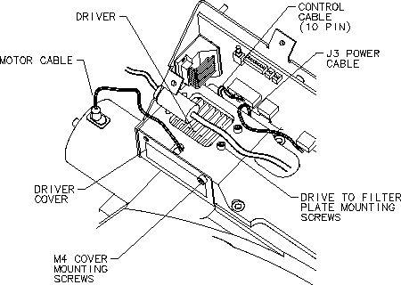

Operating Documentation
Direction 5193891-800, Rev# 5
LightSpeed 5.X Pro16 Limited Access Service Information (Adv)
Operating Documentation |
| Required Persons | Preliminary Reqs | Procedure | Finalization |
|---|---|---|---|
| 1 | Timing Not Applicable |
This procedure describes the proper replacement procedure for the Cam Motor Driver.
| Last Revised: | July 6, 2004 |
| Item | Qty | Effectivity | Part# | Manufacturer | |
|---|---|---|---|---|---|
| 2. 5 mm, 3 mm Hex key sockets | 1 | - | - | - | |
| Phillips #2 screwdriver | 1 | - | - | - | |
| Item | Qty | Effectivity | Part# | Manufacturer | |
|---|---|---|---|---|---|
| Cam Motor Driver Module | 1 | - | - | - | |
| CRUSH HAZARD. | |
| UNEXPECTED GANTRY ROTATION CAN CAUSE SERIOUS INJURY. | |
| Never service the gantry with the axial drive enabled. Use the gantry rotation lock to lock out gantry rotation. See safety menu of Service Document gui for appropriate procedures. |
| Follow ALL required safety and PPE procedures customary for your organization when working on this product. | |
| NOTE: | Before beginning this procedure, please read the safety information in Equipment Service - Gantry, located in the Safety tab of this publication. |
| Condition | Reference | Eff |
|---|---|---|
Only trained service personnel should service the GE CT Scanner. | - | - |
Remove gantry covers as required.
Refer to Parts Replacement → Gantry → Enclosure → (Cover Removal Procedure).
Turn OFF all 3 service switches (Axial Drive, HVDC, 120 VAC).
| CRUSH HAZARD. | |
| UNEXPECTED GANTRY ROTATION CAN CAUSE SERIOUS INJURY. | |
| Never service the gantry with the axial drive enabled. Use the gantry rotation lock to lock out gantry rotation. See safety menu of Service Document gui for appropriate procedures. |
Position the gantry with the XRT at 6 o'clock.
Remove the top cover from the Collimator by removing the five pan head M4 mounting screws that have spring washers.
Remove the driver cover on motor mount assembly by removing two pan head M4 screws with washers (see Illustration 1) .
Illustration 1: Cam Motor Driver Replacement

Disconnect the three wire J3 power connector at the rear of the module.
Disconnect the ten pin amp control cable at the rear of the module.
Disconnect the drive to motor cable connection.
Remove the four head cap screws 3 mm cap screws holding the drive to the filter top plate.
Remove the cam motor driver module and place in container for return.
Install new cam motor driver module with the four pan cap screws.
Set the torque on the pan cap screws to the following:
| 1.2 N-m | 10.6 lb-in | 0.9 lb-ft | 12.2 kg-cm |
Connect the drive to motor cable.
Connect the six wire motor phase drive connector.
Connect the J3 power connector.
Install the driver cover on motor mount assembly, making certain that the two tabs engage with the slots in the filter PWB Bracket.
Tighten the two pan head M4 screws with spring washers.
Replace the top cover of the Collimator using the five pan head mounting screws with spring washers and tighten.
Perform CAM A/B Motor Check.